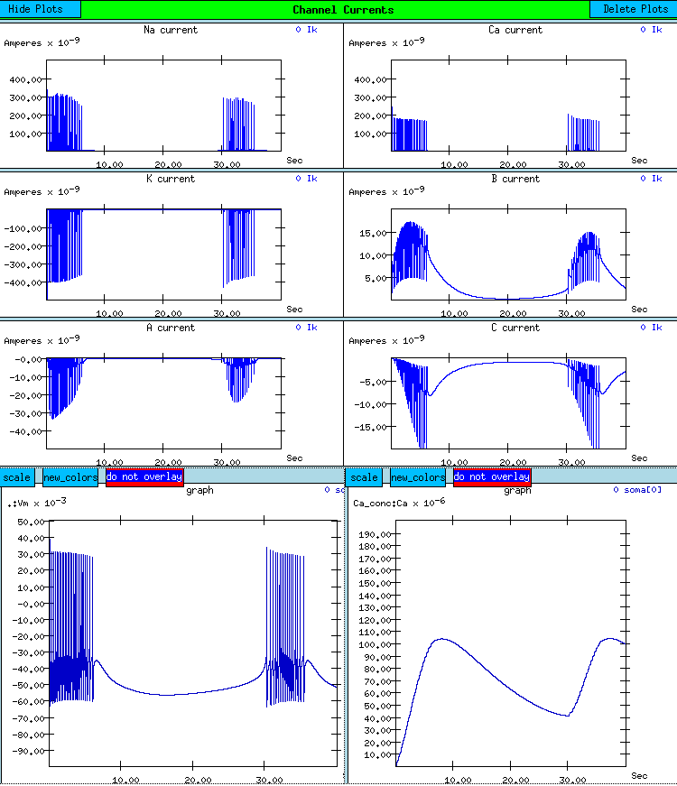

Return to the main page
Return to the main page
The Burster tutorial examines mechanisms which lead to burst firing in molluscan neurons and the effects of the various types of ionic channels which are commonly found. The use of this tutorial and the background for understanding it is provided in Chapter 7 of The Book of GENESIS. The simulation is implemented within the GENESIS Neurokit cell builder environment. This allows the user to modify most of the relevant parameters and assumptions used in the model and to investigate the causes of many of the features seen in molluscan pacemaker firing patterns. The simulation incorporates realistic channel models, taken from experimental measurements on bursting molluscan neurons.

Description:
Plots generated by the Burster tutorial. The plot at the lower left of the display shows a typical pattern of burst firing, with a plot of the intracellular Ca2+ concentration at the right. The plots of the six different channel currents, above, may be used to understand this behavior. (Here, inward currents are shown as positive.) It is also possible to plot steady state activation parameters and time constants, or the channel conductances and activations as a function of time.
The B-current, a slow inward current primarily due to Ca2+ ions, depolarizes the cell and sustains the burst. However, the B-current and the high threshold Ca-current cause an increase in the Ca concentration. This activates a slow outward current of K+ ions, the C-current, which eventually repolarizes the cell and terminates the burst. During the hyperpolarized period between bursts, the Ca2+ concentration decays, reducing the C-current. At some point, the inward leakage current and B-current exceed the outward currents and the cell begins to depolarize again, resulting in another burst of action potentials.